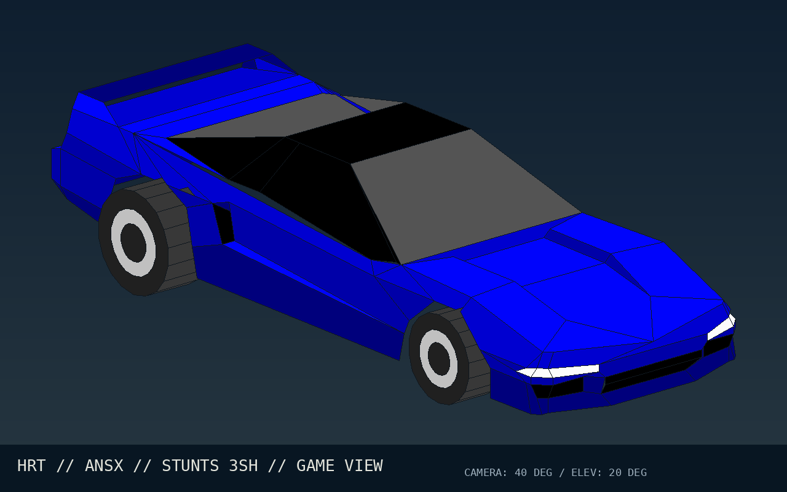
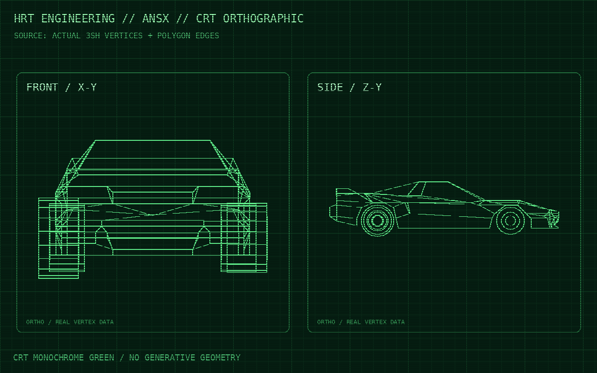
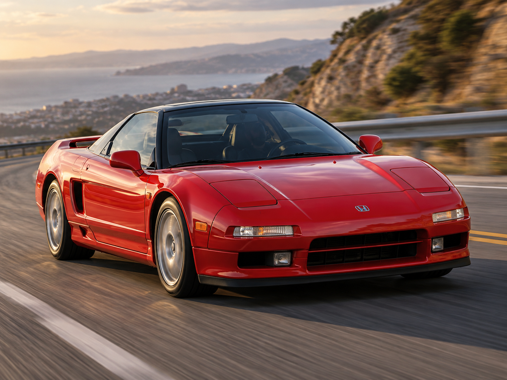

☀
HYPERION RACING TEAM · HOMOLOGATION 7/7
Acura NSX
Homologation report ANSX · Supercar · 30/10/2026
HRT · STUNTS THUMBNAIL STUDIO · ANSX
Acura NSX · 3D homologation images
Model-derived technical views from STANSX.3SH (paintjob 1 of 7), plus a real-world Acura NSX driving photograph. Open any image to view its full resolution.



Game and blueprint: STANSX.3SH · 177 vertices · 133 primitives · Stunts material palette. Real-world photograph: user-supplied. No image changes the homologation measurements or test results.
Technical summary
TOPSTUNTS · tour moteur152,30 s
V-Max tour133,1 mph
Moyenne sur circuit82,0 mph
Braking · circuit19,40 s
Glisse · circuit8,45 s
Temps en l’air5,05 s
Sauts détectés7
Pic latéral cinématique139,68 g
V-Max banc278,1 km/h
0–100 km/h5,87 s
Estimated power214 ch
100–0 braking42,7 m
7 tests completed · 0 target(s) not reached. A missed target does not mean the challenge has failed.
Detailed results
| N° | Protocol | Results | Status |
|---|---|---|---|
| 01 | Dyno test | Peak torque 249 Nm (est.) à 5 248 RPM · 214 ch (est.) à 7 295 RPM | MEASURED |
| 02 | 0–60–0 mph | Acceleration: 5,65 s · braking: 39,86 m (0,6386 tiles) · total distance: 118,15 m | MEASURED |
| 03 | 0–100–0 mph | Acceleration: 12,90 s · braking: 108,95 m (1,7453 tiles) · total distance: 454,23 m | MEASURED |
| 04 | 0–100–0 km/h | Acceleration: 5,90 s · braking: 42,72 m (0,6844 tiles) · total distance: 128,26 m | MEASURED |
| 05 | 0–200–0 km/h | Acceleration: 20,75 s · braking: 166,02 m (2,6596 tiles) · total distance: 909,16 m | MEASURED |
| 06 | V-Max | Observed top speed: 172,78 mph · 278,06 km/h · PALIER STABILISÉ | MEASURED |
| 07 | 🏁 TOPSTUNTS · tour autonome Restunts | Tour authentique TOPSTNT.TRK : 152,30 s · 133,1 mph max · replay LANSX001.RPL · 2 tentative(s) validée(s) · moyenne 82,0 mph · glisse 8,45 s · sauts 5,05 s | MEASURED |
🏁 TOP STUNTS · The Stung's hot lap
Watch the mysterious test driver, THE STUNG, take the Acura NSX (ANSX) around TOPSTNT.TRK.
Methodology
- Performance figures come from an experimental CAR*.RES simulation, not the original GAME.EXE engine.
- Braking, glisse et phases en l’air proviennent de l’analyse du BNI, seulement si présent. Le pic en g est une estimation cinématique, et non une mesure d’adhérence des pneus. Les durées élevées ne signifient pas automatiquement meilleure tenue de route.
- Times in 0.05-second ticks; 1 tile = 62.42304 m.
- Power and torque are estimates. Unreachable targets remain NOT REACHED.
- The category is estimated automatically from top speed and 0–100 km/h results.